설비보전기사(구) (2015-09-19 기출문제)
1과목: 설비 진단 및 계측
1. 맥동음이 아닌 것은?
- 송풍기 소음
- 압축기 배기음
- 엔진의 배기음
- 진공펌프 배기음
(정답률: 82%)

2. 고속 회전기의 축 진동 측정, 회전수 측정, 위치 측정 등에 사용되는 진동센서는?
- 동전형 속도 센서
- 서보형 가속도 센서
- 압전형 가속도 센서
- 와전류형 변위 센서
(정답률: 64%)
3. 프로세스 제어(Process Control)에 속하지 않는 것은?
- 압력 제어장치
- 온도 제어장치
- 유량 제어장치
- 발전기의 조속기 제어장치
(정답률: 85%)
4. 진동 방지용 차단기의 강성에 대한 설명으로 맞는 것은?
- 진동보호 대상체의 구조적 강성보다 작아야 한다.
- 하중을 충분히 받칠 수 있어야 하고 강성은 커야 한다.
- 차단하려는 진동의 최저주파수보다 큰 고유진동수를 가져야 한다.
- 시스템의 고유진동수가 진동모드의 주파수보다 크게 해야 한다.
(정답률: 59%)
5. 진동에 대한 설명으로 틀린 것은?
- 어떤 시스템이 외력을 받고 있을 때 야기되는 진동을 강제진동이라 한다.
- 진동계의 기본요소들이 모두 선형적으로 작동할 때 야기되는 진동을 선형진동이라 한다.
- 진동하는 동안 마찰이나 저항으로 인하여 시스템의 에너지가 손실되지 않는 진동을 감쇠진동이라 한다.
- 시스템을 외력에 의해 초기교란 후 그 힘을 제거하였을 때 그 시스템이 자유진동을 하는 진동수를 고유진동수라 한다.
(정답률: 77%)
6. 댐핑 처리를 하는 경우 효과가 적은 진동시스템은?
- 시스템의 고유진동수를 변경하고자 하는 경우
- 시스템이 충격과 같은 힘에 의해서 진동되는 경우
- 시스템이 그의 고유진동수에서 강제진동을 하는 경우
- 시스템이 많은 주파수 성분을 갖는 힘에 의해서 강제진동되는 경우
(정답률: 59%)
7. 진동을 측정하는 센서들 중에 직류(DC) 성분을 측정할 수 없는 센서는?
- 압전식 진동센서
- 와전류식 진동센서
- 레이저 도플러식 진동센서
- 스트레인 게이지식 진동센서
(정답률: 47%)
8. 유체의 흐름에 따라 회전하는 회전자로 케이스 사이의 공극에 유체를 연속적으로 취입해서 송출이라는 동작을 반복하여 회전자의 운동 횟수로 유량을 측정하는 유량계는?
- 면적식 유량계
- 용적식 유량계
- 전자식 유량계
- 차압식 유량계
(정답률: 76%)
9. 파동의 위상이 같은 점들을 연결한 면을 무엇이라 하는가?
- 음선(sound ray)
- 음파(sound wave)
- 파동(wave motion)
- 파면(wave front)
(정답률: 82%)
10. 초음파 레벨계의 특성이 아닌 것은?
- 온도 보정이 필요없다.
- 비접촉식 측정이 가능하다.
- 소형 경량이고 설치 및 운전이 간단하다.
- 가동부가 없고, 점검 및 보수가 가능하다.
(정답률: 62%)
11. 진동센서의 설치 위치로 적합하지 않은 것은?
- 회전축의 중심부에 설치한다.
- 레이디얼 베어링 장착부의 수직 방향에 설치한다.
- 레이디얼 베어링 장착부의 수평 방향에 설치한다.
- 스러스트 베어링 장착부의 축 방향에 설치한다.
(정답률: 84%)
12. 아래와 같이 스프링을 설치하였을 경우 합성 스프링 상수 k의 계산식으로 맞는 것은? (단, k1과 k2는 각각의 스프링 상수이다.)
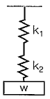
- k=k1+k2
- k=k1×k2
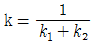
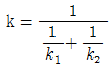
(정답률: 78%)
13. 진동을 측정할 때 사용되는 단위는?
- 폰(Phone)
- 와트(Watt)
- 칸델라(Candela)
- 데시벨(Decibel)
(정답률: 74%)
14. 측정 대상 신호의 최대 주파수가 fmax이다. 나이퀴스트 샘플링 이론에 의하여 엘리어싱(Aliasing) 영향을 제거하기 위한 샘플링 시간 △t는?
- △t≤2fmax
- △t≥2fmax
- △t≤1/2fmax
- △t≥1/2fmax
(정답률: 70%)
15. 옴의 법칙으로 맞는 것은?
- 전류(I)=전압(V)+저항(R)
- 전압(V)=전류(I)×저항(R)
- 저항(R)=전압(V)×전류(I)
- 전압(V)=전류(I)÷저항(R)
(정답률: 84%)
16. 소음 방지법 중 흡음에 관련된 내용으로 틀린 것은?
- 직접소음은 거리가 2배 증가함에 따라 6dB 감소한다.
- 소음원에 가까운 거리에서는 반사음보다 직접음에 의한 소음이 압도적이다.
- 흡음재에 시공 시 벽체와의 공간은 저주파 흡음 특성을 저해한다.
- 흡음재의 내구성 부족 시 유공판으로 보호해야 하며 이 때 개공율과 구멍의 크기 및 배치가 중요하다.
(정답률: 67%)
17. 저항, 용량 또는 인덕턴스 등에 임피던스 소자를 이용하여 입력 신호를 전압, 전류로 변조 변환하는 방법이 아닌 것은?
- 저항 변환
- 전류 변환
- 인덕턴스 변환
- 정전 용량 변환
(정답률: 61%)
18. 진동폭의 ISO 단위에서 틀린 것은?
- 변위(m), 속도(m/s)
- 변위(mm), 속도(mm/s)
- 속도(m/s), 가속도(m/s2)
- 속도(m/s2), 가속도(m/s)
(정답률: 83%)
19. 회전체에 반사테이프를 부착하고 초점 조정이 용이한 적색 가시광의 LED를 광원으로 이용하여 그 반사광을 검출한 후 신호를 변환시켜 회전주기의 역수로 회전수를 구하는 회전계는?
- 광전식 회전계
- 자기식 회전계
- 전자식 회전계
- 접촉식 회전계
(정답률: 88%)
20. 소음계에 관한 설명으로 틀린 것은?
- 보통 소음계의 검정공차는 2dB이다.
- 보통 소음계에서 주파수 범위는 31.5Hz ~ 7000Hz이다.
- 간이 소음계에서 주파수 범위는 70Hz ~ 6000Hz이다.
- 정밀 소음계에서 주파수 범위는 10Hz ~ 17000Hz이다.
(정답률: 67%)
2과목: 설비관리
21. 공사의 완급도 구분을 결정하기 위하여 고려해야 할 판정기준이 아닌 것은?
- 공사가 지연됨으로써 발생하는 만성로스의 비용
- 공사가 지연됨으로써 발생하는 생산변경의 비용
- 공사를 급히 진행함으로써 발생하는 공수나 재료의 손실
- 공사를 급히 진행함으로써 발생하는 타공사의 지연에 따른 손실
(정답률: 56%)
22. 전반적 기술계획 개발에 대한 총괄적 업무부족의 현상을 해결하며, 특정사업에 대한 집중적인 기술투자를 가능하게 하는 보전조직은?
- 스텝 조직
- 제품중심 조직
- 기능중심 조직
- 매트릭스 조직
(정답률: 61%)
23. 설비관리에서 생산성을 나타내는 것은?
- 투입/산출
- 산출/투입
- 제품생산량/보전비
- 보전비/제품생산량
(정답률: 68%)
24. 자주보전의 전개단계 중 제1단계 초기청소에 해당하지 않는 것은?
- 청소로 이상을 발견한다.
- 오염의 발생 원인을 찾는다.
- 청소 점검 기준을 작성한다.
- 이상은 가능한 한 자신이 고친다.
(정답률: 53%)
25. 공장에서 설비를 배치할 때 가장 중요한 평가 기준이 되는 것은?
- 새 공장건설의 예측화
- 기계 설비의 가동률의 최적화
- 배치 변경을 위한 융통성의 최대화
- 각 설비간의 자재 이동 및 취급의 최소화
(정답률: 69%)
26. 선반용 바이트, 밀링용 커터, 호빙머신용 호브 등은 무슨 공구인가?
- 형(die)
- 치구
- 연삭 공구
- 절삭 공구
(정답률: 81%)
27. 품질보전의 전개순서 중 요인해석(연쇄요인 규명, 불량요인 정리)을 위한 도구에 해당하지 않는 것은?
- FMECA
- PM분석
- 특성요인도
- 경제성 분석
(정답률: 65%)
28. 상비품의 요건으로 틀린 것은?
- 단가가 낮을 것
- 사용량이 적으며 단기간만 사용될 것
- 여러 공정의 부품에 공통적으로 사용될 것
- 보관상(중량, 체적, 변질 등) 지장이 없을 것
(정답률: 80%)
29. 설비관리조직의 개념이 아닌 것은?
- 설비투자를 합리적으로 할 수 있다.
- 설비관리의 목적을 달성하기 위한 수단이다.
- 구성원을 능률적으로 조절할 수 있어야 한다.
- 설비관리의 목적을 달성하는데 지장이 없는 한 될수록 단순해야 한다.
(정답률: 66%)
30. 설비의 신뢰성 평가척도가 아닌 것은?
- 고장률
- 평균고장간격
- 평균고장시간
- 설비유효가동률
(정답률: 68%)
31. 연소 목적에 맞도록 연료, 설비, 부하, 작업방법 등에 대해서 기술적·경제적으로 가장 효과를 올릴 수 있도록 관리하는 것은?
- 연료관리
- 연소관리
- 열 폐기관리
- 배열 회수관리
(정답률: 74%)
32. 가공 및 조립형 설비로스의 로스에 따른 정의가 틀린 것은?
- 고장로스 – 돌발적 또는 만성적으로 발생하는 고장에 의하여 발생되는 시간로스
- 속도저하로스 – 설비의 설계에 의한 이론 사이클 시간과 실제 사이클 시간과의 차이
- 준비·교체·조정로스 – 준비작업 및 품종교체, 공구교환에 의한 시간적 로스
- 수율저하로스 – 부품막힘, 센서의 오작동에 의한 일시적인 설비정지 또는 설비만 공회전 함으로써 발생되는 로스
(정답률: 73%)
33. 긴급도비율이라는 비율을 도입하여 투자순위를 결정하는 것은?
- 자본 회수법
- 비용 비교법
- 수익률 비교법
- 신MAPI 방법
(정답률: 73%)
34. 속도로스를 설명한 것으로 옳은 것은?
- 속도로스는 설비의 설계속도와 실제로 움직이는 속도와의 합이다.
- 속도로스는 설비의 설계속도와 실제로 움직이는 속도와의 차이다.
- 속도로스는 설비의 설계속도와 실제로 움직이는 속도와의 곱이다.
- 속도로스는 설비의 설계속도와 실제로 움직이는 속도와의 반비례 관계이다.
(정답률: 77%)
35. 소품종 대량생산에 적합한 설비배치는?
- 뱃치 방식(Batch Layout)
- 라인식 배치(Line Layout)
- 공정별 배치(Process Layout)
- 기능별 배치(Function Layout)
(정답률: 64%)
36. 설비의 투자 결정에서 발생되는 기본 문제에 대한 고려사항이 아닌 것은?
- 대상은 수익 수준에 큰 차이가 없는 조건인 설비교체에 사용한다.
- 자금의 시간적 가치는 현재의 자금이 미래 자금보다 가치가 높아야 한다.
- 미래의 불확실한 현금수익을 비교적 명백한 현금지출에 관련시켜 평가한다.
- 투자의 경제적 분석에 있어서 미래의 기대액은 그 금액과 상응되는 현재의 가치로 환산되어야 한다.
(정답률: 65%)
37. 설비효율화 저해 손실에 해당하는 것은?
- 고장손실
- 관리손실
- 에너지손실
- 보수유지손실
(정답률: 69%)
38. 설비의 신뢰성 및 보전성 관리에 대한 설명 중 옳은 것은?
- 고장률(λ)= 총가동시간/고장횟수
- 설비가동률=(정미가동시간/부하시간)×100
- 평균고장시간 : 어떤 신뢰성의 대상물에 대해 전체 고장수에 대한 전체 사용시간
- 평균고장간격 : 시스템이나 설비가 사용되어 최초 고장이 발생할 때까지의 평균시간 간격
(정답률: 67%)
39. 유용도 함수(A)를 정확히 나타낸 수식은? (단, MTTR=mean time to repair, MTBF=mean time between failure, MTBM=mean time between maintenance, MTFF=mean time to first failure 이다.)
- A = MTTR / MTTR+MTBF
- A = MTFF / MTFF+MTTR
- A = MTBF / MTBF+MTTR
- A = MTBM / MTBM+MTTR
(정답률: 74%)
40. 만성로스 개선 방법 중에서 설비나 시스템의 불합리 현상을 원리 및 원칙에 따라 물리적 성질과 메커니즘을 밝히는 사고방식은?
- FTA
- FMEA
- PM분석
- QM분석
(정답률: 67%)
3과목: 기계일반 및 기계보전
41. 측정하려고 하는 양의 변화에 대응하는 측정기구의 지침의 움직임이 많고 적음을 가리키며 일반적으로 측정기의 최소눈금으로 표시하는 것은?
- 감도
- 정밀도
- 정확도
- 우연오차
(정답률: 68%)
42. 강의 표면경화법이 아닌 것은?
- 연화법
- 질화법
- 침탄법
- 금속 침투법
(정답률: 55%)
43. 축 고장 시 설계 불량의 직접원인이 아닌 것은?
- 구조 불량
- 치수 부족
- 형상 불량
- 끼워맞춤 불량
(정답률: 77%)
44. 파이프 안지름 D[mm], 내압 p[N/mm2], 파이프 재료의 허용인장강도 σa[N/mm2], 이음효율 η, 부식에 대한 상수를 C[mm], 안전계수를 S라 할 때 파이프 두께 t[mm]를 구하는 식은?
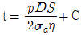
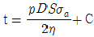
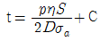
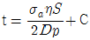
(정답률: 55%)
45. 미터 사다리꼴 나사의 표시방법 “Tr40×14(P7)”의 설명으로 옳은 것은?
- 공칭지름 40mm, 리드 7mm, 피치 14mm
- 공칭지름 40mm, 리드 14mm, 피치 7mm
- 공칭지름 40mm, 피치 7mm, 암나사의 등급 7H
- 공칭지름 40mm, 리드 14mm, 피치 7mm, 수나사의 등급 7e
(정답률: 76%)
46. 압축공기 저장 탱크의 안전밸브 역할이 아닌 것은?
- 배출량의 조정
- 2차 압력을 조정
- 토출압력의 조정
- 토출정지 압력의 조정
(정답률: 71%)
47. 3상 유도전동기에서 1상이 단선될 경우 나타나는 고장현상으로 틀린 것은?
- 슬립이 증가
- 부하전류가 증가
- 토크가 현저히 감소
- 언밸런스에 의한 진동 증가
(정답률: 60%)
48. 펌프가 운전이 되고 있으나 물이 처음에는 나오다가 곧 나오지 않을 때 원인으로 적절하지 않은 것은?
- 웨어링이 마모되었다.
- 마중물이 충분하지 못하다.
- 흡입양정이 지나치게 높다.
- 배관 불량으로 흡입관내에 에어 포켓이 생겼다.
(정답률: 70%)
49. 감속기 운전 중 발열과 진동이 심하여 분해점검 결과 감속기 축을 지지하는 베어링이 심하게 손상된 것을 발견했다. 구름 베어링의 손상과 원인을 짝지은 것 중 틀린 것은?
- 위핑(Wiping) : 간극의 협소, 축 정렬 불량
- 스코어링(Scoring) : 축 전압에 의한 베어링 면에 아크 발생
- 피팅(Pitting) : 균열, 전식, 부식, 침식 등에 의하여 여러 개의 작은 홈 발생
- 눌러붙음(Seizure) : 윤활유 부족, 부분 접촉 등으로 접촉부가 눌러 붙는 현상
(정답률: 71%)
50. 전동용 기계요소 중 원통마찰자 점검결과 원동차와 종동차의 밀어붙이는 힘이 약해 전달이 안되는 것을 확인하여 미끄러지지 않고 동력을 전달시키는 힘을 확인하려 할 때 알맞은 계산식은? (단, P : 밀어붙이는 힘, F : 전달력, μ : 마찰계수 이다.)
- F ≤ μP
- P ≤ μF
- P ≥ μF
- F ≥ μP
(정답률: 51%)
51. 강을 담금질하면 경도가 증가하나 취성이 커지므로 사용목적에 알맞도로 A1 변태점 이하의 적당한 온도로 재가열하여 인성을 증가시키고 경도를 감소시키는 것은?
- 뜨임
- 불림
- 침탄
- 풀림
(정답률: 71%)
52. 헬리컬기어의 특성에 대한 설명으로 맞는 것은?
- 진동이나 소음이 발생되기 쉽다.
- 기어 외의 모양이 직선으로 물림률이 크다.
- 원통면 위의 잇줄이 나선 모양으로 이어진다.
- 이가 물리기 시작하여 끝날 때까지 선접촉을 한다.
(정답률: 62%)
53. 드릴가공을 하였거나 주조품으로 이미 뚫려있는 구멍 내부를 확대하여 정확한 치수로 완성가공하는 가공법은?
- 보링
- 탭 작업
- 셰이퍼 작업
- 플레이너 가공
(정답률: 75%)
54. 브레이크의 용량 결정과 거리가 먼 것은?
- 발열
- 마찰계수
- 접촉면의 크기
- 브레이크의 중량
(정답률: 71%)
55. 고온가스를 취급하는 송풍기 베어링 설치방법을 연결한 것 중 맞는 것은?
- 전동기축 베어링 – 고정, 반 전동기축 - 신장
- 전동기축 베어링 – 고정, 반 전동기축 - 고정
- 전동기축 베어링 – 고정, 반 전동기축 - 신축
- 전동기축 베어링 – 신축, 반 전동기축 – 신축
(정답률: 55%)
56. 스프링의 도시 방법을 설명한 내용 중 틀린 것은?
- 겹판 스프링은 일반적으로 스프링 판이 수평인 상태에서 그린다.
- 조립도, 설명도 등에서 코일 스프링을 도시하는 경우에는 그 단면만을 나타내어도 좋다.
- 코일 스프링, 벌류트 스프링, 스파이럴 스프링 및 접시 스프링은 일반적으로 무하중 상태에서 그린다.
- 스프링의 종류 및 모양만을 간략도로 나타내는 경우에는 스프링 재료의 중심선만을 일점쇄선으로 그린다.
(정답률: 71%)
57. 축이음 핀의 빠짐 방지나 볼트, 너트의 풀림 방지로 쓰이는 것은?
- 코터
- 분할핀
- 평행핀
- 테이퍼핀
(정답률: 72%)
58. 탭 및 다이스 가공에 대한 설명 중 틀린 것은?
- 탭 작업은 구멍에 암나사를 가공하는 공작법이다.
- 보통 탭과 다이스에 의한 작업은 지름 25cm 정도까지 할 수 있다.
- 환봉의 바깥쪽에 수나사를 가공할 때 사용하는 공구는 다이스이다.
- 탭은 1~3번의 3개가 1조로 구성되어 있고, 작업은 번호 순서대로 탭을 사용하여 가공한다.
(정답률: 71%)
59. 고장 또는 유해한 성능저하를 가져온 후에 수리를 행하는 보전 방식은?
- 예방보전 : PM(Preventive Maintenance)
- 사후보전 : BM(Breakdown Maintenance)
- 개량보전 : CM(Corrective Maintenance)
- 종합적 생산보전 : TPM(Total Productive Maintenance)
(정답률: 81%)
60. 전기적 에너지에 의한 용접 방법이 아닌 것은?
- 아크 용접
- 저항 용접
- 테르밋 용접
- 플라즈마 용접
(정답률: 72%)
4과목: 윤활관리
61. 다음 중 윤활유의 탄화와 관계가 없는 것은?
- 고온 표면과의 접촉
- 윤활유의 가열 분해
- 공기 중의 산소 흡수
- 열전도 속도보다 산소와의 반응속도가 늦음
(정답률: 65%)
62. 윤활유 속에 함유된 금속 성분을 분광 분석기에 의해 정량분석하여 윤활부의 마모분과 양을 검출하는 적당한 방법은?
- NAS 계수법
- 정량 페로그래피법
- 분석 페로그래피법
- SOAP법(Spectrometric Oil Analysis Program)
(정답률: 68%)
63. 미끄럼 베어링의 급유법으로 가장 적합하지 않은 방식은?
- 분무식
- 순환식
- 유욕식
- 전손식
(정답률: 50%)
64. 파리핀계 윤활유의 특징으로 틀린 것은?
- 점도지수가 높다.
- 산화안정성이 양호하다.
- 냉동기용으로 적합하다.
- 경유의 품질은 우수하나 휘발유의 옥탄가는 낮다.
(정답률: 51%)
65. 기어윤활에서 기어의 손상과 윤활대책이 맞게 짝지어진 것은?
- 기어의 부식마멸 – 적정윤활유(종류, 동점도)의 재검토
- 기어의 눌어 붙음 – 여과를 통한 고형의 금속분 및 수분의 제거
- 미끄럼방향과 평행한 연마성의 선상마멸 – 오일의 교환 또는 여과, 필터의 점검
- 고온으로 인한 기어의 변색 및 심한 마멸 – 수분제거 및 적정량 까지 오일의 보충
(정답률: 45%)
66. 일반작동유(일반기계)의 일반적인 관리한계(교환기준)로 틀린 것은?
- 수분 : 0.5%(용량) 이하
- n-펜탄 불용분 : 0.⑤%(무게) 이하
- 동점도의 변화 : 신유의 ±15% 이내
- 전산가(신유대비증가) : 0.5mgKOH/g 이하
(정답률: 67%)
67. 그리스 분석시험 중 주도시험에 대한 설명으로 옳은 것은?
- 그리스가 장비의 부식에 미치는 영향을 간접 평가하는 시험
- 그리스의 단단하기, 즉 그리스가 얼마나 굳은가를 측정하는 시험
- 그리스 중에 함유되어 있는 수분과 저휘발성인 광유의 함유량을 확인하는 시험
- 그리스의 제조과정에서 사용된 금속염들은 그 양에 의해 좌우되는데 이것은 윤활부의 마찰을 증가시킴으로 기계를 손상시키는 요인이 되는 것을 보기위한 시험
(정답률: 78%)
68. 기름 중에 함유되어 있는 유리유황 및 부식성 물질로 인한 금속의 부식여부에 관한 시험은?
- 동판부식 시험
- 잔류탄소 시험
- 황산회분 시험
- 산화안정도 시험
(정답률: 74%)
69. 윤활유 첨가제의 일반적 성질로 틀린 것은?
- 색상이 깨끗해야 한다.
- 기유에 용해도가 좋아야 한다.
- 수용성 물질에 잘 녹아야 한다.
- 다른 첨가제와 잘 조화되어야 한다.
(정답률: 73%)
70. 베어링 윤활에서 그리수 윤활이 윤활유의 윤활보다 특성이 좋은 것은?
- 밀봉성
- 냉각효과
- 회전저항
- 순환급유
(정답률: 75%)
71. 그리스 분석시험 중 산화안정도시험의 설명으로 옳은 것은?
- 그리스류에 혼입된 협잡물을 크기별로 확인하는 시험
- 그리시의 전단안정성, 즉 기계적 안정성을 평가하는 시험
- 그리스를 장시간 사용하지 않고 방치해 놓거나 사용과정에서 오일이 그리스로부터 이탈되는 온도를 측정하는 시험
- 그리스의 수명을 평가하는 시험으로 산소의 존재하에서 산소흡수로 인한 산소압강하를 측정하여 내산화성을 평가 하는 시험
(정답률: 74%)
72. 베어링이나 기어 등에 사용되는 윤활유는 사용 중에 교반에 의하여 기포가 오일 중에 생성되며, 이것이 마찰면에 들어가면 마멸이나 윤활유의 열화를 촉진시키는데 이와 같은 현상을 방지하기 위하여 윤활유에서 요구하는 성질은?
- 점도
- 소포성
- 내 하중성
- 청정 분산성
(정답률: 79%)
73. 유압작동유(KS M 2129)에 따라 인화점이 가장 낮은 것은?
- ISO VG 22
- ISO VG 32
- ISO VG 38
- ISO VG 46
(정답률: 74%)
74. 다음 중 다수의 윤활개소에 동일한 그리스로 윤활하려고 할 때 가장 좋은 급지방식은?
- 건에 의한 급지
- 컵에 의한 급지
- 중앙집중식 급지
- 블록 시스템에 의한 급지
(정답률: 64%)
75. 마찰면이 오일 속에 잠겨서 윤활하는 방법으로 직립형 수력 터빈의 추력 베어링에 많이 사용되는 급유법은?
- 비말 급유법
- 유욕 급유법
- 패드 급유법
- 중력 순환 급유법
(정답률: 77%)
76. 압축기의 실린더 내부윤활에 사용되는 윤활유의 요구 성능이 아닌 것은?
- 적정 점도를 가질 것
- 열, 산화 안정성이 양호할 것
- 금속 표면에 대한 부착성이 좋을 것
- 생상탄소가 경질이고 부착성이 좋을 것
(정답률: 70%)
77. 그리스류의 동판에 대한 부식성을 시험하는 방법으로 옳은 것은?
- 연마한 동판을 그리스 속에 넣고, 실온(A법) 또는 100℃(B법)에서 12h 유지한 후, 동판의 변색 유무를 조사한다.
- 연마한 동판을 그리스 속에 넣고, 실온(A법) 또는 100℃(B법)에서 24h 유지한 후, 동판의 변색 유무를 조사한다.
- 연마한 동판을 그리스 속에 넣고, 실온(A법) 또는 125℃(B법)에서 24h 유지한 후, 동판의 변색 유무를 조사한다.
- 연마한 동판을 그리스 속에 넣고, 25℃(A법) 또는 100℃(B법)에서 24h 유지한 후, 동판의 변색 유무를 조사한다.
(정답률: 65%)
78. 베어링 윤활의 목적으로 틀린 것은?
- 베어링의 수명 연장
- 먼지 또는 이물질의 침입 방지
- 동력 손실을 줄이고 발열을 억제
- 유화에 따른 윤활면의 내압성 저하
(정답률: 74%)
79. CnH2n+2의 직렬 쇄상 구조이며 연소성이 양호한 원유는?
- 나프텐 계
- 방향족 계
- 올레핀 계
- 파라핀 계
(정답률: 62%)
80. 윤활유의 첨가제 중 금속의 표면에 유막을 형성시켜 마찰계수를 작게하여 유막이 끊어지지 않도록 하는 것은?
- 극압제
- 유성 향상제
- 유동점 강화제
- 점도 지수 향상제
(정답률: 56%)
5과목: 공유압 및 자동화
81. 밸브의 오버랩에 대한 설명으로 옳은 것은?
- 방향제어밸브는 일반적으로 제로 오버랩을 갖는다.
- 밸브의 작동 시 포지티브 오버랩 밸브는 서지압력이 발생할 수 있다.
- 밸브의 전환 시 모든 연결구가 순간적으로 연결되는 형태가 제로 오버랩이다.
- 포지티브 오버랩에서 밸브의 전환시 액추에이터는 부하에 종속된 움직임을 갖는다.
(정답률: 59%)
82. “비압축성 유체가 관내를 흐를 때 유량이 일정할 경우 유체의 속도는 단면적에 반비례한다.”와 관련된 법칙은?
- 렌츠의 법칙
- 보일의 법칙
- 샤를의 법칙
- 연속의 법칙
(정답률: 54%)
83. 제어프로그램에 의해 정해진 작업 순서대로 순차적으로 공정이 진행되는 제어시스템은?
- 시퀀스 제어
- 메모리 제어
- 파일럿 제어
- 시간에 따른 제어
(정답률: 81%)
84. 다음 기호 중에서 공기압 모터를 나타낸 것은?
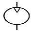
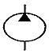
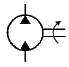
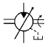
(정답률: 72%)
85. 다음 중 솔레노이드 밸브에 전압은 가해져 있는데 아마추어가 작동하지 않고 있을 때 원인으로 가장 적합한 것은?
- 스러스트 하중이 작용
- 배기공이 막혀 배압이 발생
- 실링 시트, 스프링 손상으로 스위칭이 오동작
- 아마추어 고착, 고전압, 고온도 등으로 인한 코일 소손 및 저 전압 공급
(정답률: 71%)
86. 공압을 이용한 시퀀스 제어에서 발생하는 신호의 간섭을 제거할 수 있는 방법으로 틀린 것은?
- 공압 타이머를 이용한 방법
- 압력조절 밸브를 이용한 방법
- 오버센터 장치를 이용한 방법
- 방향성 롤러레버를 이용한 방법
(정답률: 49%)
87. 피드백 제어계의 시간응답 특성을 설명한 것으로 옳은 것은?
- 응답이 처음으로 희망값에 도달하는 시간은 응답시간이다.
- 응답이 정해진 허용범위 이내로 정착되는 시간은 상승시간이다.
- 응답 중에 생기는 입력과 출력의 최대 편차량은 오버슈트이다.
- 응답이 최초로 희망값의 70.7%에 도달하는데 필요한 시간은 지연시간이다.
(정답률: 52%)
88. 베르누이 정리를 식으로 옳게 표한한 것은? (단, V : 유체의 속도, g : 중력가속도, p : 유체의 압력, γ : 비중량, Z : 유체의 위치이다.)
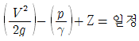
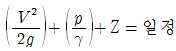
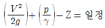
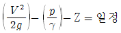
(정답률: 70%)
89. 유압 작동유의 점도가 너무 높을 경우에 대한 설명으로 틀린 것은?
- 작동유의 비활성
- 동력 손실의 증대
- 기계 마찰 부분의 마모 증대
- 내부 마찰의 증대와 온도 상승
(정답률: 56%)
90. 공압 모터의 특성이 아닌 것은?
- 과부하에 안전함
- 속도 범위가 넓음
- 고속을 얻기가 어려움
- 무단 속도 및 출력 조절이 가능
(정답률: 57%)
91. 실린더의 이론 출력을 계산하기 위해 필요한 요소가 아닌 것은?
- 공기 압력
- 실린더 행정거리
- 실린더 튜브 내경
- 피스톤 로드 내경
(정답률: 60%)
92. 다음 중 PLC와 같은 장치가 속하는 부분은?
- 센서
- 네트워크
- 프로세서
- 동력 제어부
(정답률: 76%)
93. 물체가 접근하면 진폭이 감소하는 고주파 L, C발진기에 의해 센서 표면에 전자계를 형성하고 감지하는 센서는?
- 광전 센서
- 리드 스위치
- 용량형 센서
- 유도형 센서
(정답률: 56%)
94. 두 개의 입구 X와 Y를 갖고 있음 출구는 A 하나이다. 입구 X, Y에 각기 다른 압력을 인가했을 때 고압이 A로 출력되는 특징을 갖는 공압 논리 밸브는?
- 급속 배기 밸브
- 교축 릴리프 밸브
- 고압 우선형 셔틀밸브
- 저압 우선형 셔틀밸브
(정답률: 73%)
95. 다음 중 미세 필터에 사용되는 재료로 부적합한 것은?
- 금속망
- 규소물
- 유리섬유
- 플라스틱섬유
(정답률: 68%)
96. 벤트포트를 이용하여 3개의 서로 다른 압력을 원격으로 제어하려고 할 때 사용해야하는 압력제어 밸브는?
- 카운터밸런스 밸브
- 직동현 릴리프 밸브
- 외부파일럿형 무부하 밸브
- 평형피스톤형 릴리프 밸브
(정답률: 45%)
97. 다음 진리표에 대한 논리를 만족하는 밸브로 옳은 것은? (단, a와 b는 입력, y는 출력이다.)
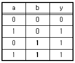
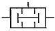
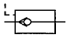
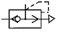
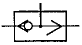
(정답률: 56%)
98. 편 로드 유압 실린더의 설계에 관한 내용 중 잘못된 것은?
- 실린더의 팽창과정과 수축과정에서 속도는 수축과정이 더 빠르다.
- 패킹을 내유성 고무로 사용할 경우 그 기호는 H로 표기한다.
- 유압 실린더의 호칭에는 규격번호 또는 명칭, 구조형식, 지지형식의 기호, 행정길이 등이 포함된다.
- 실린더 튜브 양단은 단조한 둥근 뚜껑으로 하는 것이 좋고, 양쪽 다 분리할 수 없도록 한다.
(정답률: 67%)
99. 용적형 유압펌프가 아닌 것은?
- 기어 펌프
- 베인 펌프
- 터빈 펌프
- 왕복동 펌프
(정답률: 55%)
100. 다음 중 유압 작동유로서 필요한 요소가 아닌 것은?
- 비압축성일 것
- 윤활성이 좋을 것
- 적절한 점도가 유지될 것
- 화학적으로 반응이 좋을 것
(정답률: 72%)